Endoscopic depth models are tested on the same scope, the same tissue and the same clean frames they were trained on. EndoDepth-X tests them where it actually matters — on degraded images, and on an endoscope they have never seen.
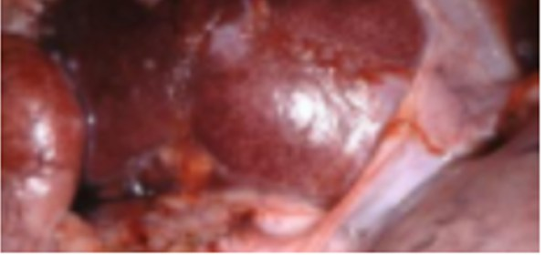
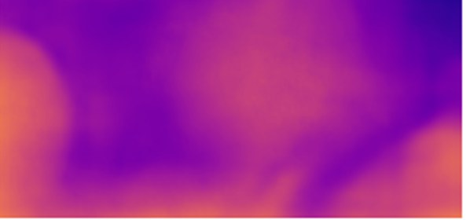
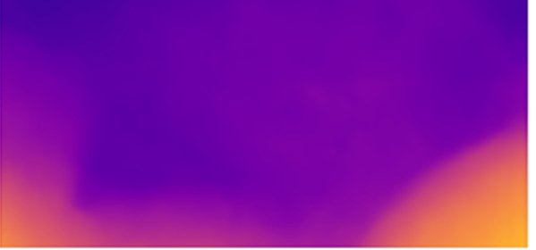
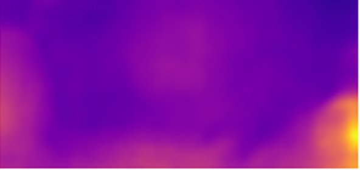
Depth estimation is the foundation of endoscopic 3D reconstruction, navigation, lesion sizing and surgical AR. When depth quietly fails, everything built on top of it fails too. Participants train on a single public dataset and are scored on data they have never seen, along two tracks. Enter either, or both.
Same scope, same tissue — but the frame is a mess. Specular glare, motion blur, poor exposure, sensor noise, a fogged lens. Everything that happens in a real procedure and never happens in a benchmark.
A different scope, different optics, different tissue. The question every clinician eventually asks: does this model work anywhere other than the hospital it was built in?
Ranking is by mDERS, a single robustness score published with the EndoDepth benchmark. It rewards models that stay accurate and keep their errors small as conditions get worse, and it needs no reference model — so no team's score depends on which baseline we happened to pick. Higher is better.
Built on SCARED — 35 endoscopic videos with real depth ground truth, from the EndoVis challenge at MICCAI 2019. On top of it we apply the degradations an endoscopic frame actually suffers.
Frames with depth ground truth, plus every published degradation. Yours to train on however you like.
Images only, no ground truth. Upload a .zip of your depth maps for public leaderboard feedback.
Never downloadable. Unseen images and unpublished degradations, scored inside our infrastructure.
Four evaluated depth models and the open-source degradation generator ship with the challenge, so every team starts from the same place and nobody has to rebuild the benchmark to enter.
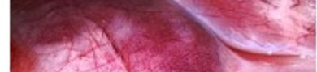
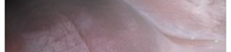
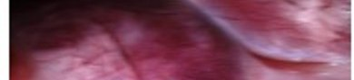
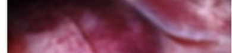
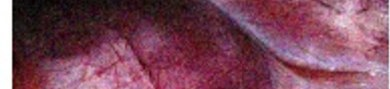
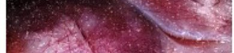
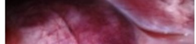
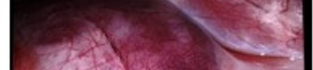
Only the last one counts toward the ranking.
Sign up on the challenge platform and download the training set with its ground truth, plus the baseline models and the degradation toolkit.
Run your model on the validation images, upload your depth maps as a zip, and see where you stand on the public leaderboard. Practice round.
Nothing to download. We run your container on our side, offline, against images you never see. Your model comes to the data. This is the official ranking.
Certificates for the top teams in each track, an invited talk at the on-site session at ISBI 2027, and co-authorship on the joint challenge paper for every team that releases its code.
School of Engineering and Sciences
Tecnológico de Monterrey, Mexico
CINVESTAV Unidad Guadalajara
Mexico
Universidad Panamericana, Aguascalientes, Mexico
CRAN · Université de Lorraine & CNRS, France
Challenge infrastructure & evaluation
Mexico
Want to be told the moment the data and the submission page go live? Drop us a line.